狄克斯特拉算法
问题¶
找出从 A 到 B 时间最少的路径？
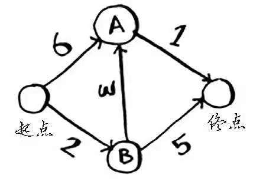
其中每个数字表示的都是时间，单位为分钟。为找出从起点到终点耗时最短的路径，这里使用**狄克斯特拉算法**。它包含如下四个步骤：
- 找出“最便宜”的节点，即可在最短时间内到达的节点
- 更新该节点的邻居的开销，其含义将稍后介绍。
- 重复这个过程，知道对图中每个节点都这样做了。
- 计算最终路径。
解析过程¶
第一步：找出最便宜的节点。¶
你站在起点，不知道该前往节点A还是前往节点B。前往这两个节点都要多长时间呢？
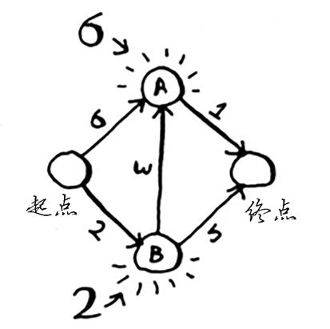
前往节点A需要6分钟，而前往节点B需要2分钟。至于前往其他节点，你还不知道需要多长时间。
由于你还不知道前往终点需要多长时间，因此你假设为无穷大（这样做的原因你马上就会明白）。节点B是最近的——2分钟就能达到。
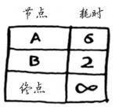
第二步：计算经节点B前往其各个邻居所需的时间。¶
对于节点B的邻居，如果找到前往它的更短路径，就更新其开销。在这里，你找到了：
-
前往节点A的更短路径（时间从6分钟缩短到5分钟）；
-
前往终点的更短路径（时间从无穷大缩短到7分钟）。
第三步：重复！¶
重复第一步：找出可在最短时间内前往的节点。你对节点B执行了第二步，除节点B外，可在最短时间内前往的节点是节点A。
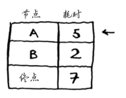
重复第二步：更新节点A的所有邻居的开销
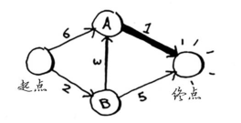
你发现前往终点的时间为6分钟！
你对每个节点都运行了狄克斯特拉算法（无需对终点这样做）。现在，你知道：
- 前往节点B需要2分钟；
- 前往节点A需要5分钟；
- 前往终点需要6分钟。
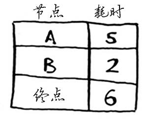
最后一步—计算最终路径¶
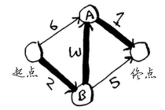
更加上面列出的表格，可得知到终点的最小耗时为6，经过的节点有B、A。
代码实现¶
要编写解决这个问题的代码，需要三个散列表。
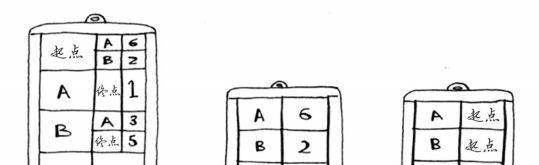 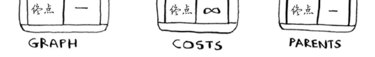
随着算法的进行，你将不断更新散列表 costs 和 parents。
1、GRAPH¶
首先，需要实现这个图，为此可使用一个散列表。
graph = {}
这里需要同时存储邻居和前往邻居的开销。例如，起点有两个邻居——A和B。
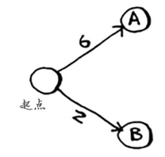
如何表示这些边的权重呢？为何不使用另一个散列表呢？
graph["start"] = {}
graph["start"]["a"] = 6
graph["start"]["b"] = 2
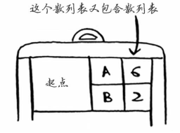
表示整个图的散列表类似于下面这样。
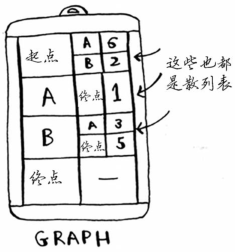
接下来，需要用一个散列表来存储每个节点的开销。
2、COSTS¶
节点的开销指的是从起点出发前往该节点需要多长时间。
你知道的，从起点到节点B需要2分钟，从起点到节点A需要6分钟（但你可能会找到所需时间更短的路径）。你不知道到终点需要多长时间。对于还不知道的开销，你将其设置为无穷大。在Python中能够表示无穷大吗？你可以这样做：
infinity = float("inf")
3、parent¶
还需要一个存储父节点的散列表：
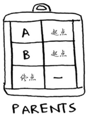
最后，你需要一个数组，用于记录处理过的节点，因为对于同一个节点，你不用处理多次。
processed = []
4、算法¶
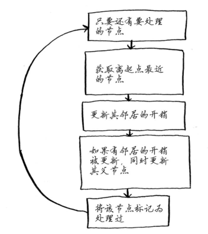
数据结构
需要三个散列表：graph、costs、parents
graph¶
# 起点的邻居
graph['start'] = {}
graph['start']['a'] = 6
graph['start']['b'] = 2
# a节点的邻居
graph['a'] = {}
graph['a']['fin'] = 1
# b节点的邻居
graph['b'] = {}
graph['b']['a'] = 3
graph['b']['fin'] = 5
# 终点没有任何邻居
graph['fin'] = {}
因此 graph[start] 是一个散列表，起点的邻居可以这样获取：
graph['start'].keys()
costs: 从起点出发，前往该节点需要多长时间¶
infinity = float('inf') # 无限大
costs = {}
costs['a'] = 6
costs['b'] = 2
costs['fin'] = infinity
parents：存储父节点¶
parents = {}
parents['a'] = 'start'
parents['b'] = 'start'
parents['fin'] = None
最后，还需要一个数组，用于记录处理过的节点。
5、代码¶
node = find_lowest_cost_node(costs)
while node is not None:
cost = costs[node]
neighbors = graph[node]
# 遍历邻居
for n in neighbors.keys():
new_cost = cost + neighbors[n]
if costs[n] > new_cost: # 如果当前节点前往该邻居节点更近
costs[n] = new_cost # 更新该邻居的开销
parents[n] = node # 同时将当前节点设置为该邻居的父节点
processed.append(node)
node = find_lowest_cost_node(costs)
查找花销最小的节点
def find_lowest_cost_node(costs):
lowest_cost = float("inf")
lowest_cost_node = None
for node in costs:
cost = costs[node]
if cost < lowest_cost and node not in processed:
lowest_cost = cost
lowest_cost_node = node
return lowest_cost_node